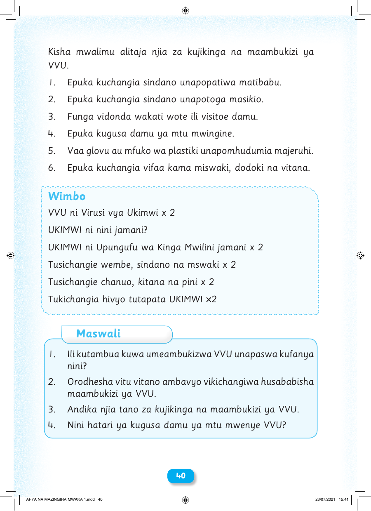

Kisha mwalimu alitaja njia za kujikinga na maambukizi ya VVU. 1. Epuka kuchangia sindano unapopatiwa matibabu. 2. Epuka kuchangia sindano unapotoga masikio. 3. Funga vidonda wakati wote ili visitoe damu. 4. Epuka kugusa damu ya mtu mwingine. 5. Vaa glovu au mfuko wa plastiki unapomhudumia majeruhi. 6. Epuka kuchangia vifaa kama miswaki, dodoki na vitana. Wimbo VVU ni Virusi vya Ukimwi x 2 UKIMWI ni nini jamani? UKIMWI ni Upungufu wa Kinga Mwilini jamani x 2 Tusichangie wembe, sindano na mswaki x 2 Tusichangie chanuo, kitana na pini x 2 Tukichangia hivyo tutapata UKIMWI ×2 Maswali 1. Ili kutambua kuwa umeambukizwa VVU unapaswa kufanya nini? 2. Orodhesha vitu vitano ambavyo vikichangiwa husababisha maambukizi ya VVU. 3. Andika njia tano za kujikinga na maambukizi ya VVU. 4. Nini hatari ya kugusa damu ya mtu mwenye VVU? 40 AFYA NA MAZINGIRA MWAKA 1.indd 40 23/07/2021 15:41